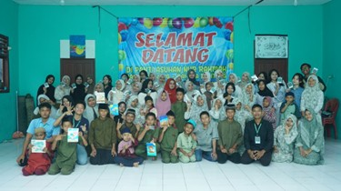

Mahasiswa Manajemen dengan latar belakang pendidikan Farmasi.
Memiliki ketertarikan pada bidang leadership, program development, community engagement dan creative content management.
Kenali Saya Lebih JauhSeorang mahasiswa Manajemen di Universitas Pertiba dengan latar belakang pendidikan Farmasi. Saya memiliki pengalaman praktik kerja di industri farmasi dan fasilitas pelayanan kesehatan, serta pengalaman kerja sebagai staff apotek yang berfokus pada pelayanan pelanggan, administrasi, dan pengelolaan stok obat.
Selain itu, aktif dalam berbagai organisasi dan komunitas yang berfokus pada pengembangan diri, kepemimpinan serta kegiatan sosial masyarakat. Terbiasa bekerja dalam tim, mampu berkomunikasi dengan baik serta memiliki inisiatif untuk menciptakan program yang berdampak positif bagi masyarakat.
Jejak langkah profesional dan pengalaman kepemimpinan saya.

Desember 2025 – September 2026
Juni 2024 – Sekarang
31 Januari 2026 – Desember 2026
November 2025 – Sekarang
Juni 2023 – September
Desember 2022 – Maret 2023
20 Desember 2025 | Pantai Koala Air Anyir
Penanggung Jawab program edukasi lingkungan di kawasan pesisir. Mengoordinasikan kegiatan beach clean up, team-based challenges, creative missions, dan pengelolaan konten kampanye keberlanjutan.
Des 2025 – Mar 2026 | Berbagai Panti & Alun-Alun
Koordinator kegiatan sosial di Panti Siti Anna, Panti Asuhan Al-Ikhlas, Alun-Alun Taman Merdeka, dan Panti Asuhan Ad-Dhuha. Berbagai aktivitas interaktif dilakukan seperti: bercerita bersama lansia, membuat sate buah, kreasi gelang dan clay, hingga memperkenalkan kembali permainan tradisional Bangka Belitung.
Tertarik untuk berkolaborasi atau mengetahui lebih lanjut tentang program yang saya kerjakan? Jangan ragu untuk menghubungi saya!